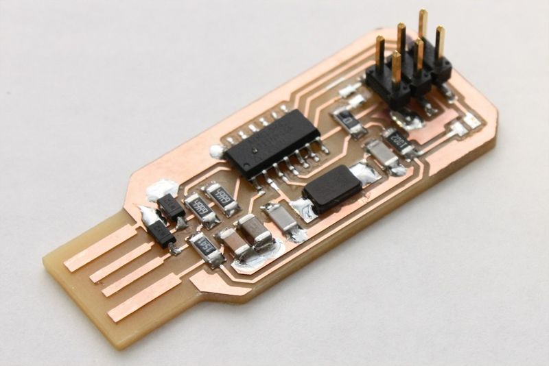
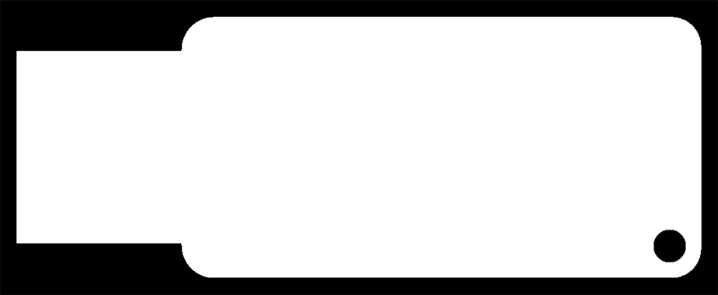
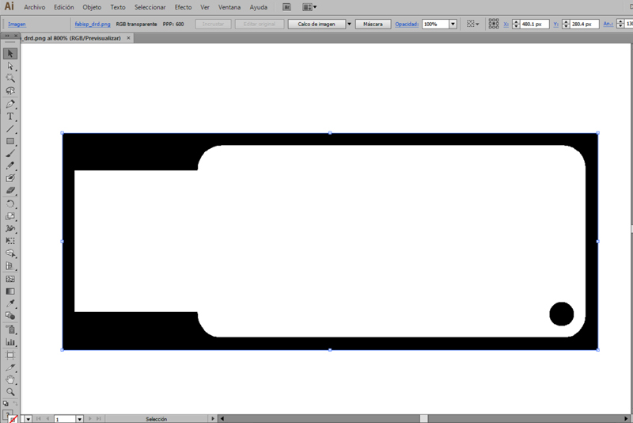
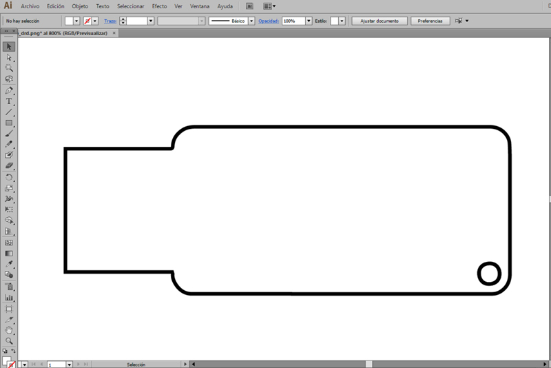
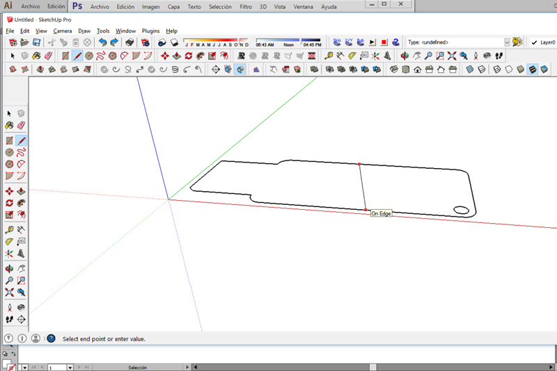
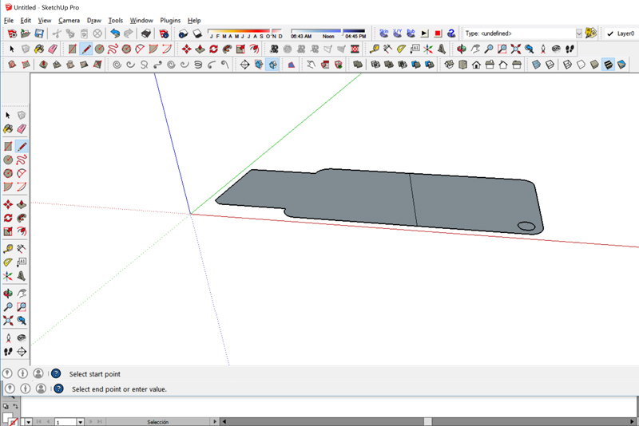
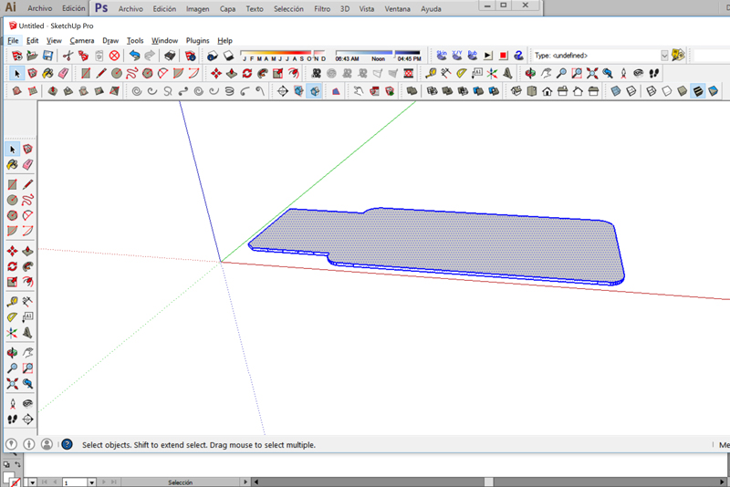
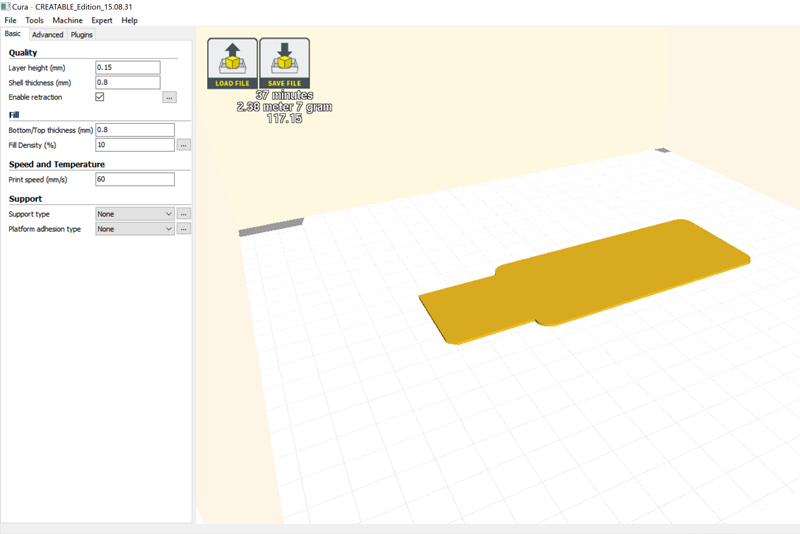
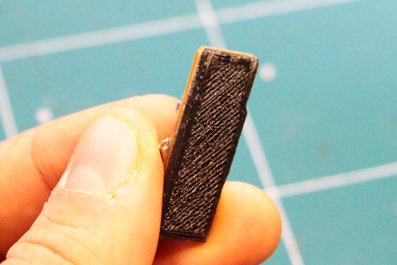

All content © 2013 Eduardo Chamorro (except where otherwise noted) Some rights reserved.
All content © 2013 Eduardo Chamorro (except where otherwise noted) Some rights reserved.Licensed under a Creative Commons Attribution-NonCommercial-ShareAlike 3.0 Unported License
We have found that on most computers when you use a PCB usb milled connector you don't get a good enough connection if you just stick it in a USB port, even.One solution is to use an extension cable with spring loaded contacts like the Belkin Pro Series USB 2.0 Extension Cable as Shawn Wallace recommended.
Or you can make a 3d printed base in a few steps.
The board we take as example is Andy's ISP design For producing a pcb with the modela we use two files.(Traces and Interior) We only need the interior file it looks like this:After downloading the file (be carefull the image on this tutorial it is out of scale).
Open the png with illustrator or inkscape. Up on the menu you will see"image rasterize" do it.
After, you have to ungroup and erase the rectangular vector around our pcb trace. Export as DXF file and close the program.
For these step I used sketchup with stl plugin but almost all 2/3d design programs should work or have these options.
Import the file in sketchup,you will be able to see the vectors, but they are not yet a surface.
Trace a line with the pen tool, the filled surface should appear on our contour.Extrude the surface between 0,7-1mm(depends on how loose/new is your usb port)after erasing the line you just made.
We got our 3dbase for the usb. 
Time to export it as binary stl file and 3d print it. We used Cura slicer. Our parameter were 0.15mm layer height but almost any parameter should work.

Double side tape your print to your pcb and ready to use it!
All content © 2013 Eduardo Chamorro (except where otherwise noted) Some rights reserved.